13 Juillet - Hong Kong (HKUST)
Beaucoup de photos aujourd'hui, un peu moins de texte.
Longue ballade, avec cascade et araignées géantes. J'ai du me baisser à maintes reprises pour en éviter. L'eau de la cascade était tiede, c'était très agréable.
 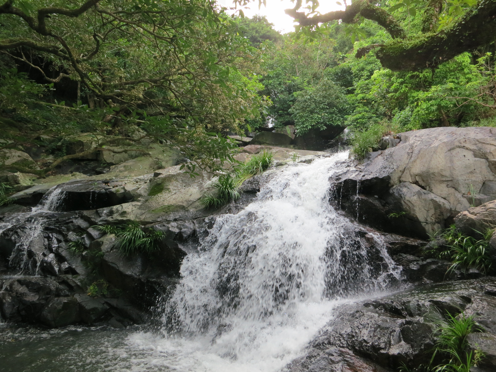
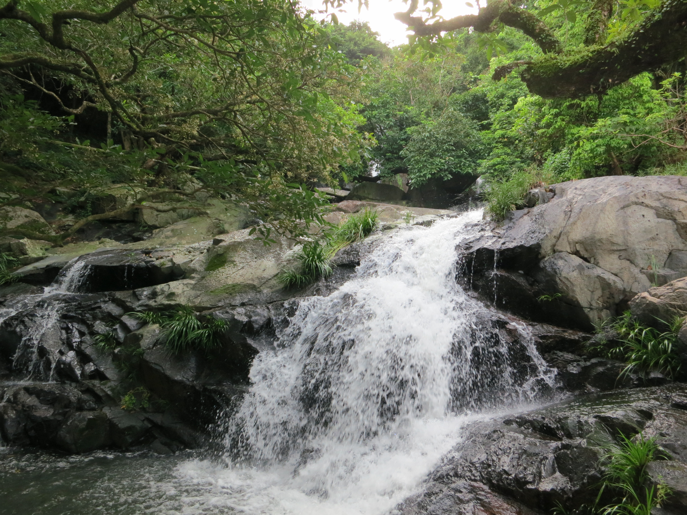
 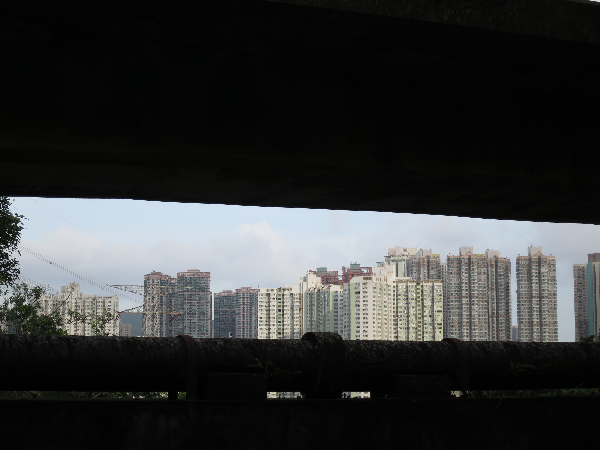
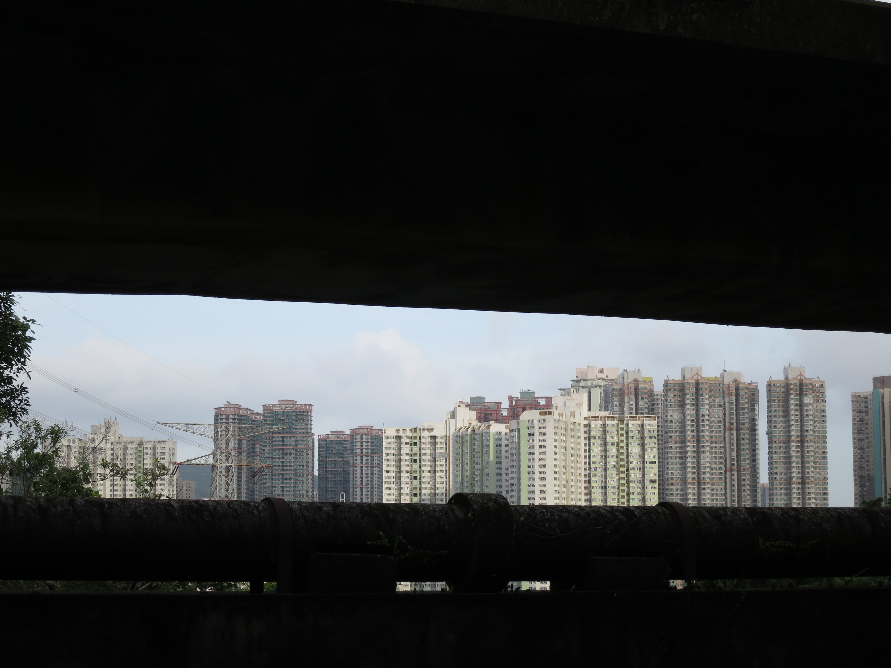
 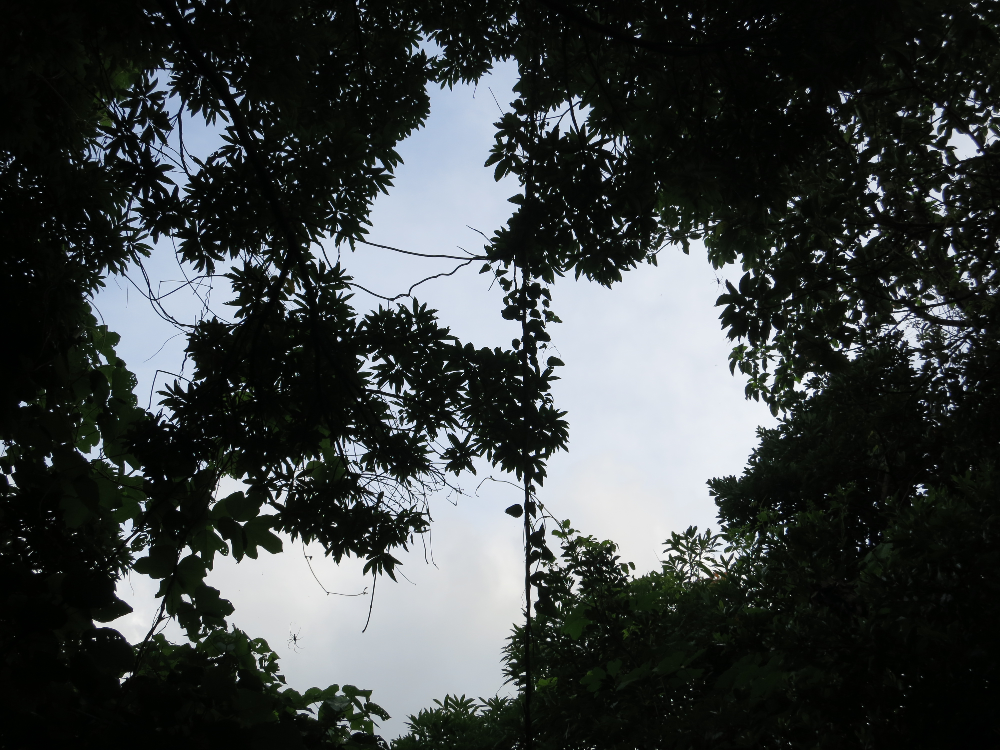
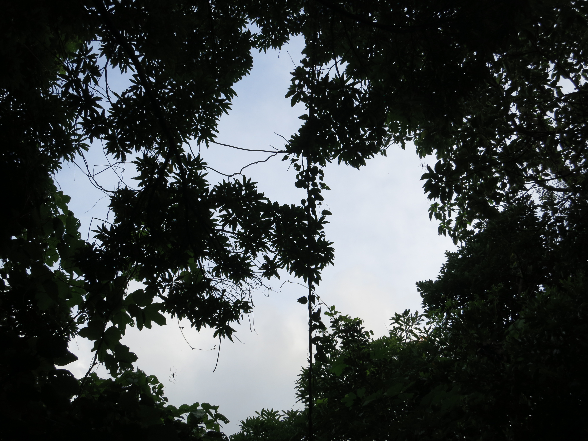
 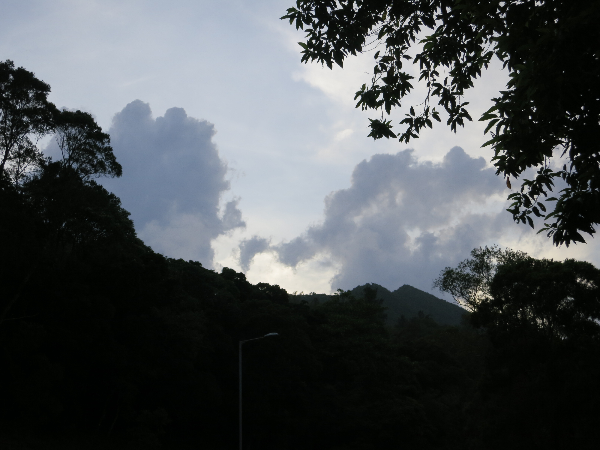
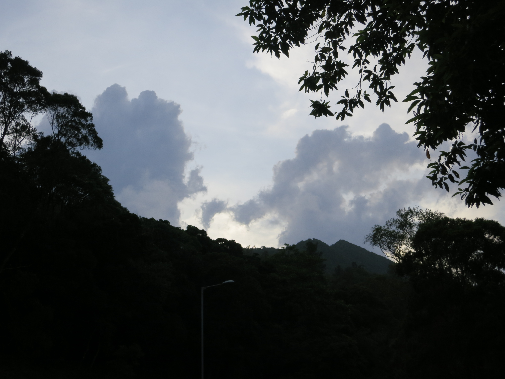


 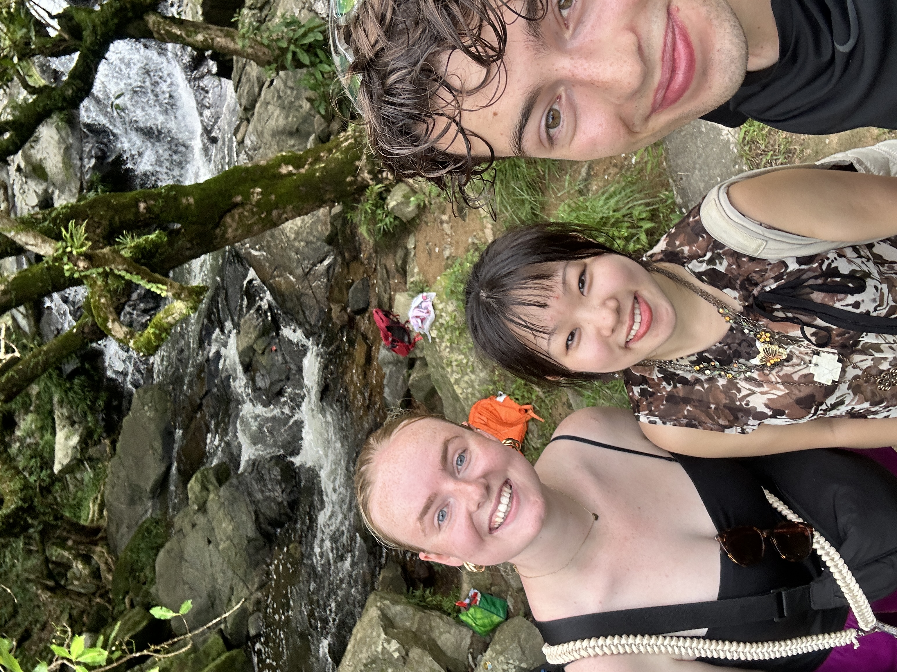
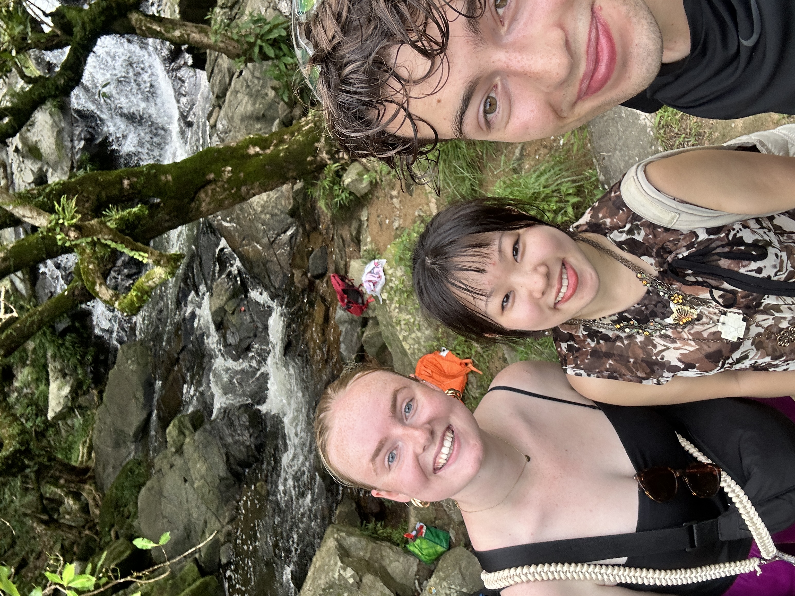
 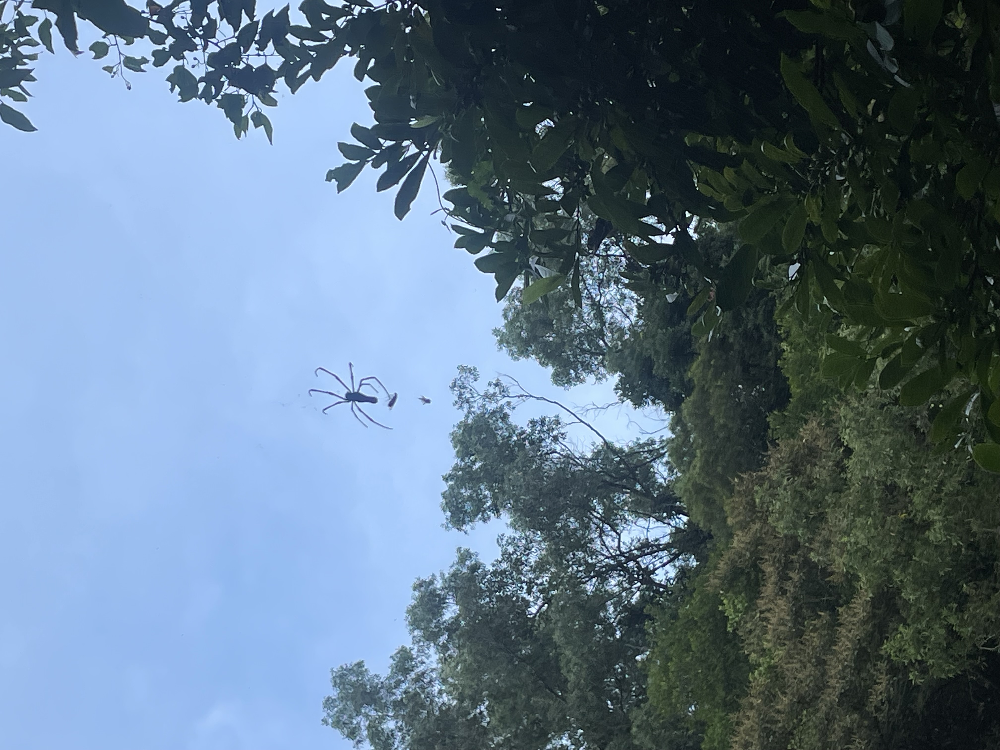
← Retour
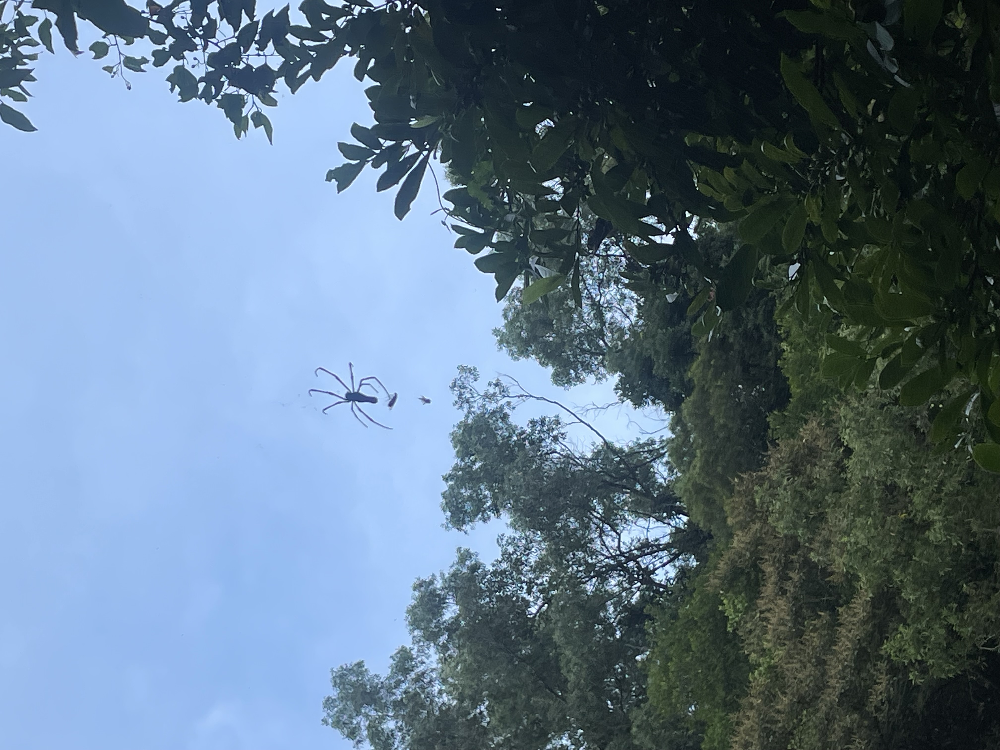
← Retour